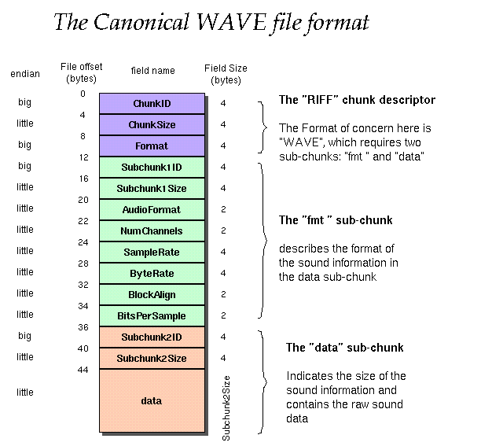
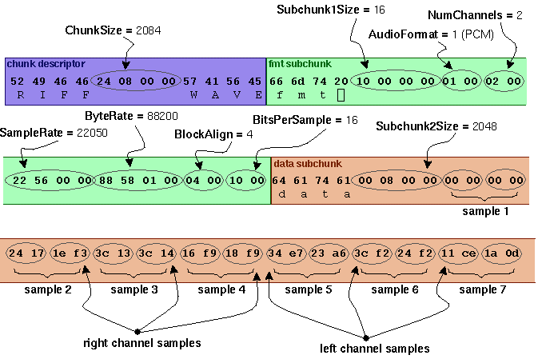

The WAVE file format is a subset of Microsoft's RIFF specification for the storage of multimedia files. A RIFF file starts out with a file header followed by a sequence of data chunks. A WAVE file is often just a RIFF file with a single "WAVE" chunk which consists of two sub-chunks -- a "fmt " chunk specifying the data format and a "data" chunk containing the actual sample data. Call this form the "Canonical form". Who knows how it really all works. An almost complete description which seems totally useless unless you want to spend a week looking over it can be found at MSDN (mostly describes the non-PCM, or registered proprietary data formats).
I use the standard WAVE format as created by the sox program:

Offset Size Name Description
The canonical WAVE format starts with the RIFF header: 0 4 ChunkID Contains the letters "RIFF" in ASCII form (0x52494646 big-endian form). 4 4 ChunkSize 36 + SubChunk2Size, or more precisely: 4 + (8 + SubChunk1Size) + (8 + SubChunk2Size) This is the size of the rest of the chunk following this number. This is the size of the entire file in bytes minus 8 bytes for the two fields not included in this count: ChunkID and ChunkSize. 8 4 Format Contains the letters "WAVE" (0x57415645 big-endian form). The "WAVE" format consists of two subchunks: "fmt " and "data": The "fmt " subchunk describes the sound data's format: 12 4 Subchunk1ID Contains the letters "fmt " (0x666d7420 big-endian form). 16 4 Subchunk1Size 16 for PCM. This is the size of the rest of the Subchunk which follows this number. 20 2 AudioFormat PCM = 1 (i.e. Linear quantization) Values other than 1 indicate some form of compression. 22 2 NumChannels Mono = 1, Stereo = 2, etc. 24 4 SampleRate 8000, 44100, etc. 28 4 ByteRate == SampleRate * NumChannels * BitsPerSample/8 32 2 BlockAlign == NumChannels * BitsPerSample/8 The number of bytes for one sample including all channels. I wonder what happens when this number isn't an integer? 34 2 BitsPerSample 8 bits = 8, 16 bits = 16, etc. 2 ExtraParamSize if PCM, then doesn't exist X ExtraParams space for extra parameters The "data" subchunk contains the size of the data and the actual sound: 36 4 Subchunk2ID Contains the letters "data" (0x64617461 big-endian form). 40 4 Subchunk2Size == NumSamples * NumChannels * BitsPerSample/8 This is the number of bytes in the data. You can also think of this as the size of the read of the subchunk following this number. 44 * Data The actual sound data.
As an example, here are the opening 72 bytes of a WAVE file with bytes shown as hexadecimal numbers:
52 49 46 46 24 08 00 00 57 41 56 45 66 6d 74 20 10 00 00 00 01 00 02 00 22 56 00 00 88 58 01 00 04 00 10 00 64 61 74 61 00 08 00 00 00 00 00 00 24 17 1e f3 3c 13 3c 14 16 f9 18 f9 34 e7 23 a6 3c f2 24 f2 11 ce 1a 0d
Here is the interpretation of these bytes as a WAVE soundfile:

For more info see http://www.ora.com/centers/gff/formats/micriff/index.htm
 Formed in 2009, the Archive Team (not to be confused with the archive.org Archive-It Team) is a rogue archivist collective dedicated to saving copies of rapidly dying or deleted websites for the sake of history and digital heritage. The group is 100% composed of volunteers and interested parties, and has expanded into a large amount of related projects for saving online and digital history.
Formed in 2009, the Archive Team (not to be confused with the archive.org Archive-It Team) is a rogue archivist collective dedicated to saving copies of rapidly dying or deleted websites for the sake of history and digital heritage. The group is 100% composed of volunteers and interested parties, and has expanded into a large amount of related projects for saving online and digital history.